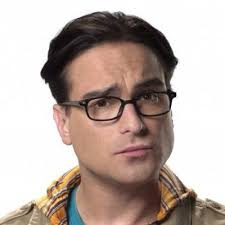
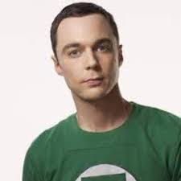
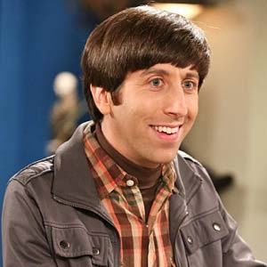
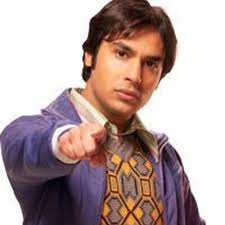

生活大爆炸
《生活大爆炸》（英语：The Big Bang
Theory，缩写作英语：TBBT），又译为《天才也性感》、《天才理论传》、《大爆炸理论》，
是由查克·洛尔和比尔·布拉迪创作的美国情景喜剧，在2007年9月24日由哥伦比亚广播公司推出，于2019年5月16日第12季播放后剧终结束。
故事情节
这部电视剧剧情设定于加利福尼亚州帕萨迪纳市，围绕四位虚构的理工学院天才和一位邻家女孩的生活和工作活动展开。
租住同一间公寓的实验物理学家Leonard Hofstadter和理论物理学家Sheldon
Cooper，以及他们的两位同样书呆子气并且缺乏社交能力的同事与朋友：航天工程师Howard
Wolowitz 和天体物理学家拉Rajesh Koothrappali。
住在他们对门的是一位漂亮的金发餐厅女侍应Penny，她有志成为一名演员。
四位主角是高智商的书呆子气与Penny的社交能力和依赖常识形成了鲜明的对比，让全剧充满了喜剧色彩。
主要角色
-
约翰尼·盖尔克奇 - 伦纳德·雷奇·霍夫斯塔特（Dr. Leonard Leakey
Hofstadter,Ph.D.）

-
实验物理学家，智商173，在24岁时获取普林斯顿大学的博士学位，并获得年度最佳论文奖。他住在北洛斯罗夫莱斯大道2311号公寓4A单元，室友是其同事兼好友谢尔顿·库珀，另外两个同事兼好友是霍华德和拉杰。
他和三个好友都具有书呆子的性格，伦纳德是当中较为“正常”的一人。他常有意识地想去“融入社会”，但有时也会为了逞强而打肿脸充胖子。
由于脾气和性格因而结交霍华德和拉杰两位好友，也使他们不得不与谢尔顿共处多年，并早已习惯谢尔顿的生活方式；对邻居佩妮一见钟情，继而发展出分分合合的恋爱关系，
在爱情方面时不时会展现出一点自私的态度，一直想方设法对佩妮求婚，却始终遭到她的忽视与拒绝，后来与她在一次生活困难时候成功而与她订下婚约，
两人经过一年的调整后顺利完婚，但结婚后依然状况不断，和佩妮离不开争吵，但依然没有影响到他跟佩妮的深厚感情。
在谢尔顿荣获诺贝尔奖当天，他在谢尔顿的演讲中被称赞为他一生中最棒的挚友。
-
吉姆·帕森斯 - 谢尔顿·李·库珀（Dr. Sheldon Lee Cooper, B.S., M.S.,
M.A., Ph.D., Sc.D.）

-
理论物理学家，在1980年出生在德克萨斯东部，智商187，伦纳德的室友。是4个宅男好友中智商最高的一位，年仅11岁就考上大学，还获得其中一个博士学位，但他的情商却一直让周围的人抓狂。
崇尚科学，尤其是自己的专业，会把日常事情全部理论化、教条化，但丝毫不通人情世故。有相当强烈的强迫症，所有的事情必须按照自己的意愿，在生活习惯上也绝对不能有任何改变，哪怕出现一小点改变都会大发牢骚；
在生病的时候会闹的更厉害。不懂得谦虚和体谅他人，难以领会反语、讽刺和幽默。喜欢电影、动漫和玩具，常常需要像孩子一样被照顾，而且是个火车迷。
有洁癖，不近女色；在遇到佩妮与艾米之前坚决不会对任何女孩有任何的身体接触，往后开始慢慢接受改变的事实，跟艾米的感情也更上一层楼，但不久后由于还是对爱情不够重视而和她分开。
经历一阵子孤独后突然领略到艾米对他的重要性，于是跑过去和她再度复合，并且在她生日的时候终于决定和她“破处”。跟艾米交往数年后因一次“偶然机遇”而向她求婚乃至结婚，跟她得出超不对称性理论后以此最终荣获诺贝尔奖，实现一生中最大的愿望。
在瑞典参与颁奖典礼，他领略到没有身边朋友的陪伴及教育得不来今日的成就，因此在全体观众面前分别对伦纳德等朋友表示感谢。
-
伦纳德和谢尔顿的邻家女孩，在内布拉斯加州的奥马哈市长大，家族姓名始终没有透漏。为了实现当演员的梦想而搬到帕萨迪纳，住在谢尔顿和伦纳德的楼道对门的4B号。
容貌姣好、性情不羁的她曾与很多男性交往，社交能力与四位宅男的习性形成鲜明对比；自打儿时起就个性强势、爱酒如命，对四人组喜爱的科幻事物完全没有兴趣，反而在群体中最有“男子气概”。
一开始在起司蛋糕工厂当过服务生努力奋斗而打算成为一名优秀女演员，但参与过多个试演而至今尚未成功，只拍过一部痔疮广告和一部低成本怪兽恐怖片系列作品。
当她好不容易得到的一次著名美剧客串戏份遭到删剪后，在演艺事业屡屡失败下领悟到理想与现实之差异，在此期间向莱纳德求婚，并接受伯纳黛特的介绍，转行为药品公司推销员。
佩妮本不想要孩子，在谢尔顿和艾米荣获诺贝尔奖不久，在一次喝醉情况下跟伦纳德共度一晚，无意间怀上她跟伦纳德的孩子。
-
西蒙·黑尔贝格 - 霍华德·乔尔·沃洛维茨（Howard Joel Wolowitz,
M.Eng.）

-
航天工程师，犹太人，只有硕士学位，是宅男四人组里唯一没有博士学位的人，但却是四人组中唯一一位上太空，第一个结婚的人。他喜欢在群体里炫耀成果，总是指出他的工程硕士学位来自麻省理工学院，
实际动手能力也是宅男四人组中最强的，设计的是真正会被送上太空的仪器，同时也是四人中最有实力的电脑高手。性格在结婚前十分好色、重色轻友，乐于与异性搭讪，语言能力与模仿能力极强，
经常会利用能力去对女孩炫耀，自认为是深得与异性交往之道的“情圣”；实际上方法总是不合时宜而适得其反，为了泡妞而屡次差点搞砸自己的事业。他有花生过敏症，结婚前一直与过度肥胖的母亲同住，
此事虽然经常给他带来烦恼，但本人其实根本离不开母亲，而母亲在后来的突然辞世也对他造成打击。此后一直没有离开母亲生前的大宅，跟伯纳黛特共同育有两个孩子。
-
昆瑙·纳亚尔 - 拉杰什·拉玛亚·库斯拉帕里（Dr. Rajesh Ramayan
Koothrappali, Ph.D.）

-
天体物理学家，印度人，是霍华德的最好朋友。性格较为感性、懦弱，缺乏男性魄力，做出成就时会得意忘形；常做出被人视为同性恋的举动。
在年轻女性面前非常害羞，没有酒精或药物的帮助就讲不出话来，但是一旦喝醉（或者以为自己喝醉）后就会变成极富语言魅力的泡妞高手，
但因为有沟通障碍，许多时候说的话得罪人却浑然不知。后来，他的研究陷入绝境，而又不愿意返回印度，因此不得已转为在谢尔顿手下共事，
并与他共享一间办公室，直到谢尔顿搬去一间新办公室。女友露西和他分手以后，心情万分沮丧之下却发现自己终于能够不借助酒精成功的和女性对话，
后来在交友网站上认识皮肤科医师艾米丽，虽然有时候无法忍受她的重口风格与习惯，但还是和她交往持续两年多直到后来分手。始终作为四人里唯一的单身汉，
一度等不下去而拜托父亲帮他包办婚礼，得以跟同样来自印度的女孩安努订婚，但随着安努因工作关系而搬去英国，两地分隔之下仍然分手告终。
荣誉和奖项
-
2009年8月，该剧赢得了北美电视评论协会（Television Critics
Association）喜剧类杰出成就奖，吉姆·帕森斯亦因为谢尔顿一角赢得了喜剧类个人成就奖项。
-
2009年，该剧获得美国电影学会十大最佳电视剧奖项第一名，凯莉·库柯也获得《娱乐周刊》最佳女主演奖。
- 2010年，该剧摘得全美民选奖和《娱乐周刊》最佳喜剧奖。
- 吉姆·帕森斯在2010、2011连续两年蝉联艾美奖最佳喜剧男主演奖。
- 2011年金球奖音乐喜剧类最佳表演奖。
-
吉姆·帕森斯再次在2013、2014连续两年蝉联艾美奖最佳喜剧男主演奖，平了该奖项之历史纪录（以同一角色获得四座艾美喜剧类男主角奖）。
季度
| 季数 |
集数 |
首集播出时间 |
末集播出时间 |
| 1 |
17 |
2007年9月24日 |
2008年5月19日 |
| 2 |
23 |
2008年9月22日 |
2009年5月11日 |
| 3 |
23 |
2009年9月21日 |
2010年5月24日 |
| 4 |
24 |
2010年9月23日 |
2011年5月19日 |
| 5 |
24 |
2011年9月22日 |
2012年5月10日 |
| 6 |
24 |
2012年9月27日 |
2013年5月16日 |
| 7 |
24 |
2013年9月26日 |
2014年5月15日 |
| 8 |
24 |
2014年9月22日 |
2015年5月7日 |
| 9 |
24 |
2015年9月21日 |
2016年5月12日 |
| 10 |
24 |
2016年9月19日 |
2017年5月11日 |
| 11 |
24 |
2017年9月25日 |
2018年5月10日 |
| 12 |
24 |
2018年9月24日 |
2019年5月16日 |